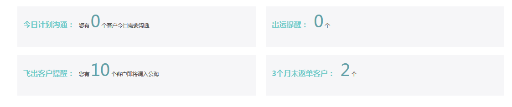
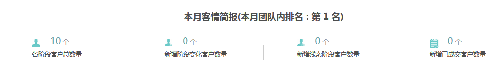
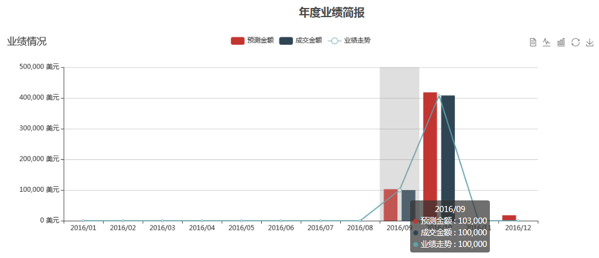
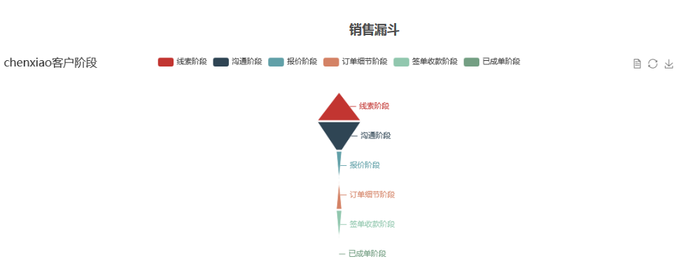

业务员可以在首页查看自己的数据看板
沟通提醒，出运提醒，飞出客户提醒，3个月未返单客户均会在后台首页提示

首页会展示业务员本月以及本年度的业绩情况
本月：各阶段客户总数，新增阶段变化数量，新增线索阶段客户数量，新增已成交客户数，并显示自己本月在团队排名情况

年度：预测金额：业务员填写到回款记录的金额，包括未被业务经理确认和已被业务经理确认的金额。
实际回款/成交金额：业务员填写了回款记录，被业务经理确认，回款时间为业务经理确认的时间。
合同金额：所签订合同的实际金额。

各阶段客户数量不重合，销售漏斗中，各阶段图例中顶部代表给阶段的客户数量，点击相应阶段进入阶段客户明细表。销售漏斗可以在图的右侧切换为数据视图的展示形式。
